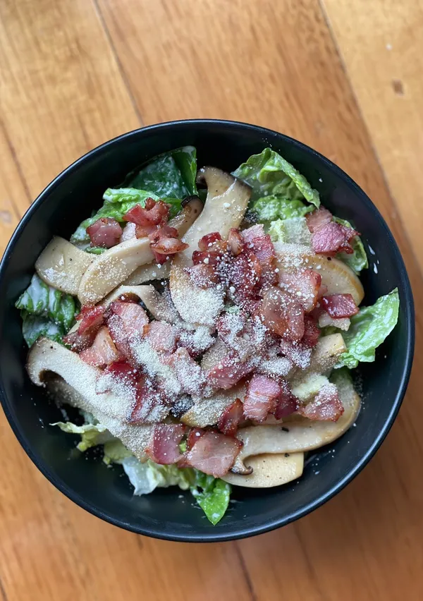
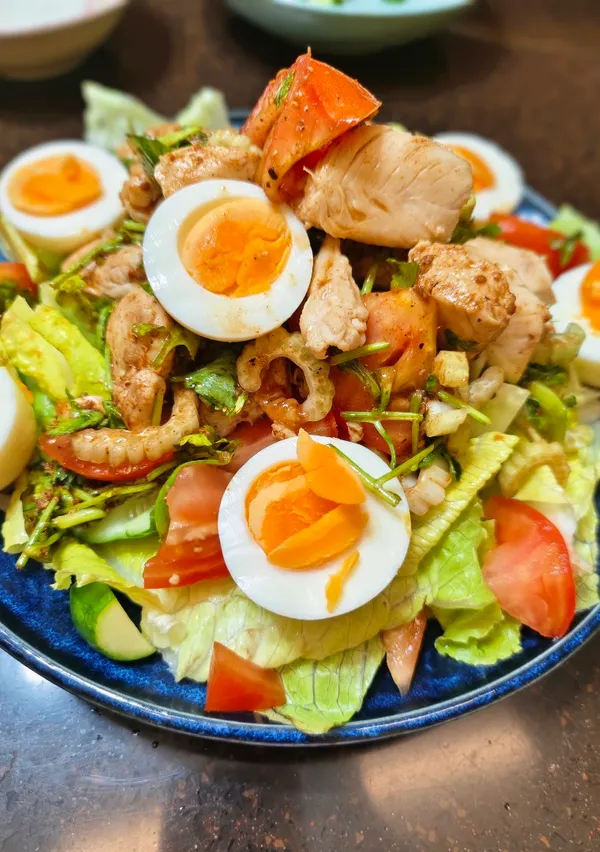
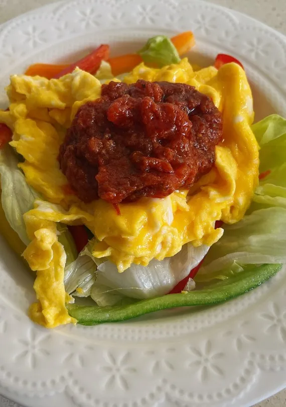

沙拉選單
新鮮健康沙拉選擇，結合多元風味與豐富營養。
香煎培根&奶油杏鮑菇溫沙拉
95元
香煎培根與奶油杏鮑菇溫沙拉是一道結合了豐富口感、多層次風味和適中溫度的沙拉。它打破了傳統沙拉冰冷的印象，將溫熱的主食與新鮮蔬菜結合，特別適合秋季或冬季的輕食主菜或精緻配菜。
摩洛哥香草醬雞肉蕃茄蔬菜沙拉
100元
這道沙拉結合了清新的摩洛哥香草醬[Chermoula]、烤雞肉和豐富的蔬菜，是一道極具北非地中海風味的主食沙拉。以Chermoula醬的酸、香、辣為雞肉和蔬菜提味，風味強烈而開胃。
彩椒番茄醬生菜沙拉
90元
彩椒番茄醬生菜沙拉是以新鮮生菜為基底，使用彩椒和番茄混合製作的醬汁調味。這種組合強調天然蔬菜的鮮甜、清脆口感以及輕盈健康的調味，醬汁由新鮮或烤過的彩椒番茄打成泥，風味清新自然。